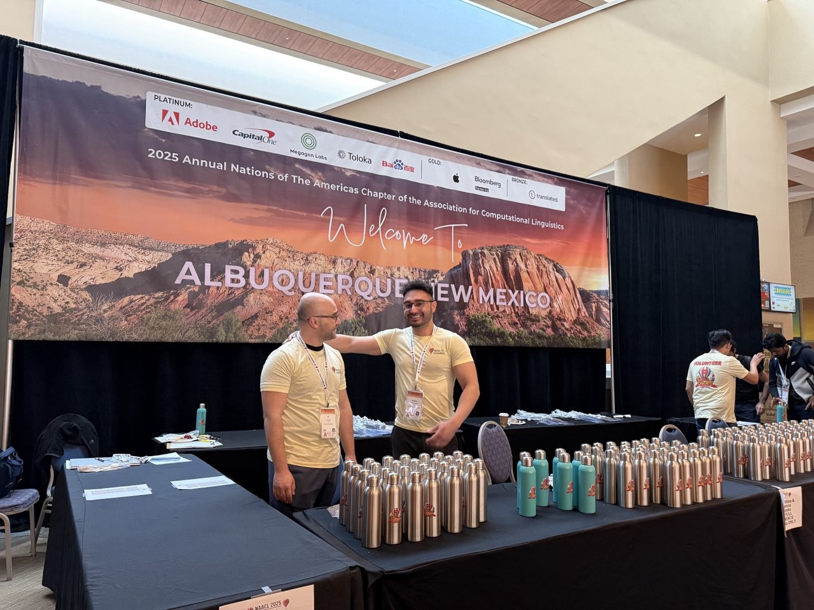

Aliakbar Nafar¶
Summary¶
PhD in NLP and LLMs with NAACL 2025 Outstanding Paper. 5+ years building production LLM and neuro-symbolic AI models. Open-source project lead with 12+ cross-institution collaborators. Currently an AI Extern at BetterHelp, completing my PhD in the coming months.
News¶
- Invited to serve as a reviewer for AAAI 2027. (June, 2026)
- Invited to serve as a reviewer for NeSy 2026. (June, 2026)
- Our paper "Extracting Probabilistic Knowledge from Large Language Models for Bayesian Network Parameterization" was published in TMLR. (May, 2026)
- Serving as a reviewer for ACL Rolling Review March cycle. (March, 2026)
- Submitted "Extracting Probabilistic Knowledge from Large Language Models for Bayesian Network Parameterization" to TMLR. (January, 2026)
- Serving as a reviewer for COLM 2026. (January, 2026)
- Serving as a reviewer for ACL Rolling Review January cycle. (January, 2026)
- Our paper "An Agentic Framework for Neuro-Symbolic Programming" was posted to arXiv. (January, 2026)
- Serving as a reviewer for the journal of Transactions on Machine Learning Research (TMLR). (October, 2025)
- Serving as a reviewer for ACL Rolling Review October cycle. (October, 2025)
- Bayesian-network parameterization preprint arXiv and GitHub updated. (August 13, 2025)
- Invited to serve on the AAAI 2026 Program Committee. (July, 2025)
- Awarded the Carl V. Page Memorial Graduate Fellowship. (April, 2025)
- Serving as a reviewer for ACL Rolling Review May cycle. (May, 2025)
- Our paper received the NAACL 2025 Outstanding Paper Award. (April, 2025)
- Selected as a NAACL 2025 volunteer. (April, 2025)

- "Learning vs Retrieval: The Role of In-Context Examples in Regression with LLMs" accepted to NAACL 2025. (January, 2025)
- "Reasoning over Uncertain Text by Generative Large Language Models" accepted to AAAI 2025. (December, 2024)